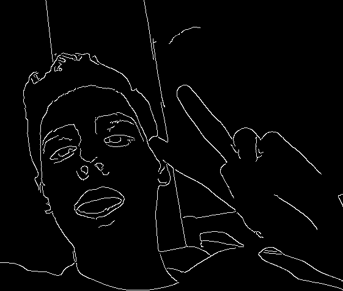

about this project
this mobile-oriented website was created by ezra miller in chicago, illinois. it is part of 21 minus, the exposition of teen creativity at the museum of contemporary art in chicago. the website is an exploration of interactivity, web development, and art. this project is open source and all of its code can be found here. the project was created using these technologies: html5, css3, javascript, canvas, ratchet, pouchdb, hammer.js, cold water, time, patience, and love. scroll down to learn about each "sketch."
about me
i'm ezra and i'm 17 years old. i'm a self-taught web designer/developer who loves javascript, canvas, pixel sorting, processing, and interactive websites. me: 
you can contact me at emiller@lsoc.org with comments, questions, feedback, or if you'd like to hire me for your next web design project.
randomoji
just for fun because i love emojis.
pixel sort
take or upload an image and see its pixels sorted. click share to add your sorted image to the social stream page.
pixel sort 2
same as pixel sort, but pixels are sorted based on brightness and the brightness threshold can be changed.
gradient sort
sort the rgb values of a gradient.
web draw
draw something and save it.
le.witt
an interactive sol lewitt wall drawing.
roth.ko
generative mark rothko "paintings".
al.bers
generative josef albers "paintings".
stream
anonymous social stream of pixel sorted images shared by users of the site.